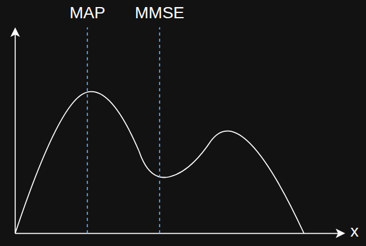

Given a probability distribution, what is the optimal state to return from an estimation method.

When the distribution is gaussian (symmetric, unimodal distribution), MAP and MMSE give the same result.
It is possible to derive a kalman filter by solving either estimator-optimisation problems because they coincide for a gaussian input. The original Kalman paper does it geometrically using projections. Also mentioned in Kailath's book.
MAP
One option is to pick the maximum of the distribution, the state corresponding to the highest point. This is called the maximum a posterior estimate.
$$
arg \max \; p(x|y)
$$
$p(x|y)$ is the probability of the state given the measurements. This is called posterior since it is a distribution of the state based on all the collected measurements.
MMSE
The other reasonable choice is to pick the least squares or the minimum mean squared error answer which would return the average/mean state (in the middle) of the distribution. In the figure, MMSE is a bad estimate since it returns a state that is at a low probability point.
$$
arg \min_\hat x \; E\left[(x - \hat x)^\top (x - \hat x)\right]
$$
The expectation is minimised to output the corresponding state estimate $\hat x$. Also called least squares or minimum variance. gemini.